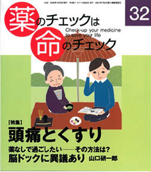

No.32 特集 頭痛とくすり 2008年10月 発行
バファリン、イブ、セデス・・・頭痛のくすりのコマーシャルがどこの家庭にも入り込んでいる。
毎日のように耳に入り、目に入り、慣れ親しみ、頭痛薬はとても身近なものになっている。
しかし、ほんとに効くのでしょうか？ 仮に効いているとして、飲めば解決するのでしょうか？
脳神経外科医、神経内科医、開業医内科医などそれぞれの立場から頭痛について解説している。
脳ドックの是非も解説。患者用薬の説明書付き。
もくじ
特集 頭痛とくすり
■ 親子で頭痛です――患者に聞く
■ 患者の知恵袋：片頭痛は体の警告センサー 東 幸生
■ よくある頭痛の診断と治療（開業医の立場から） 池田桂三
■ 脳外科医に聞く：山口研一郎医師へのインタビュー
診断の基本はていねいな問診
■ 頭痛の検査／頭痛の予防
■ 脳ドックに異議あり！ 山口研一郎
■ 頭痛のくすり、でもその前に 浜 六郎
片頭痛は炎症反応
片頭痛は薬に頼らず防げる
■ 頭痛の薬剤評価
患者用 頭痛の薬の説明書
アセトアミノフェン、イブプロフェン、エルゴタミン、スマトリプタン
薬剤リスト（ＮＰＯＪＩＰの評価付き）
ステロイド関連
■ 喘息治療は進歩したか？ 豊島協一郎
■ アトピーはやはりアレルギーとは違う 一色百合子
タミフル最新情報
■ タミフルが突然死・異常行動を起こすことは確実 浜 六郎
連載
■ リレーエッセー ♪勇気を出して〜 隈本邦彦
■ ＥＢＭ超入門 DIPEx（番外編） 読者からの質問に答えて 別府宏圀
■ みんなのやさしい生命倫理（3２） 生老病死（２） 谷田憲俊
その他
■ コーヒー無礼区
■ 奈良県大淀町立病院母体死亡事件・裁判傍聴記３
■ 質問箱（１）３か月の間に二度も生検を受けて大丈夫？
（２）低音突発難聴にステロイドは有効か？
（３）牛乳について再び
■ 読者の声
■ 書評（１）ミトコンドリアが進化を決めた』
（２）受ける？受けない？――エックス線 CT検査 医療被曝のリスク
（３）「母」たちの戦争と平和
■ 用語の解説
■ 第６回医薬ビジランスセミナー案内
「専門医に聞く」より
頭痛でまず受診するのは内科だと思うのですが、脳内の病気ではないか、念のためにと脳外科を紹介されることがあります。また、日本頭痛学会は神経内科医が中心の団体です。頭痛へのアプローチが担当の科によって異なるのでしょうか？ 違うとすればどんな点でしょう？ 頭痛の種類や診断方法などについて脳神経外科医の山口研一郎さんに伺いました。 （以下、引用省略、詳しくは本誌で）